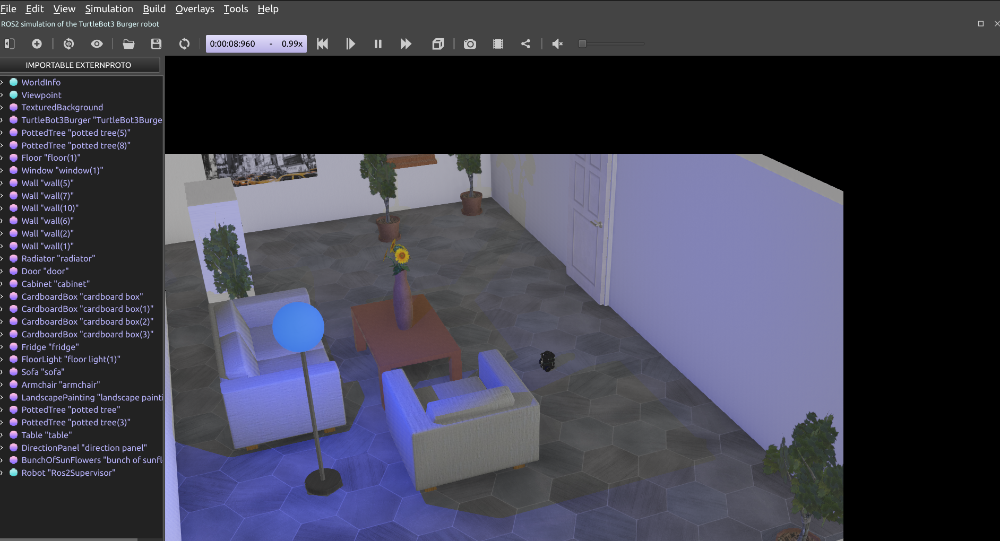
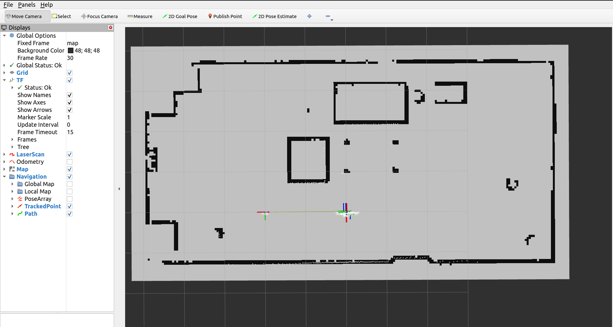

Quick Start#
Here we provide a quick recipe to get started with Kompass. The recipe is a single python script to build a complete navigation system. We will test the recipe in simulation. Lets first see how we can run the recipe and then we will go through it step by step.
Run the recipe#
To quickly launch the recipe using Kompass we use a simulation of the Turtlebot3 robot in Webots simulator.
Install turtlebot3 and webots ROS2 packages:
sudo apt install ros-${ROS_DISTRO}-webots-ros2 ros-${ROS_DISTRO}-rviz2
Install map server and localization packages:
sudo apt install ros-${ROS_DISTRO}-nav2-map-server ros-${ROS_DISTRO}-robot-localization
Launch the simulation:
ros2 launch kompass webots_turtlebot3_launch.py
This will start webots simulator, Rviz and the robot localization and map server:
{kind=link}

Webots Tutrlebot3 Simulation#
{kind=link}

Rviz#
Open a new terminal and launch our recipe:
ros2 run kompass turtlebot3_test
Step-by-Step Tutorial#
Step 1: Setup your robot#
The first step to start navigating is to configure the robot the will use the navigation system. Kompass provides a RobotConfig primitive where you can add the robot motion model (ACKERMANN, OMNI, DIFFERENTIAL_DRIVE), the robot geometry parameters and the robot control limits. Lets see how that looks like in code.
import numpu as np
from kompass_core.models import (
AngularCtrlLimits,
LinearCtrlLimits,
RobotGeometry,
RobotType,
)
from kompass.config import RobotConfig
# Setup your robot configuration
my_robot = RobotConfig(
model_type=RobotType.DIFFERENTIAL_DRIVE,
geometry_type=RobotGeometry.Type.CYLINDER,
geometry_params=np.array([0.1, 0.3]),
ctrl_vx_limits=LinearCtrlLimits(max_vel=0.2, max_acc=1.5, max_decel=2.5),
ctrl_omega_limits=AngularCtrlLimits(
max_vel=0.4, max_acc=2.0, max_decel=2.0, max_steer=np.pi / 3
),
)
Above we have configured the robot to be a differential drive robot (which is the Turtlebot3 motion model) and approximated the geometry of the robot with a cylinder of dimensions \((Radius = 0.1m, Height = 0.3m)\). The control limits are configured only for the linear (forward) velocity \(v_x\) and the angular velocity \(\omega\), as the robot has no lateral \(v_y\) movement.
Next we need to provide the robot \(TF\) frame names:
from kompass.config import RobotFrames
robot_frames = RobotFrames(
robot_base='base_link',
odom='odom',
world='map',
scan='LDS-01'
)
See also
You can learn more here about the available robot configurations in Kompass.
Note
You can also pass the same previous configuration using a YAML file. See an example in turtulebot3.yaml
Step 2: Setup your stack components#
Kompass components come with pre-configured default values for all the parameters, algorithms and inputs/outputs. To get the default configuration you simply need to provide a name to each component (the ROS2 node name). In this recipe, we will setup the minimal configuration required to run the stack with the Turtlebot3. We set the Planner goal_point input to the clicked_point topic on Rviz, and set the Driver output to the Turtlebot3 command.
from kompass.components import (
Controller,
Planner,
PlannerConfig,
Driver
)
from kompass.topic import Topic
# Setup components with default config, inputs and outputs
planner_config = PlannerConfig(loop_rate=1.0) # 1 Hz
planner = Planner(component_name="planner", config=planner_config)
# Set Planner goal input to Rviz Clicked point
goal_topic = Topic(name="/clicked_point", msg_type="PointStamped")
planner.inputs(goal_point=goal_topic)
# Get a default controller component
controller = Controller(component_name="controller")
# Set DriveManager velocity output to the turtlebot3 twist command
driver = DriveManager(component_name="drive_manager")
driver.outputs(command=Topic(name="cmd_vel", msg_type="Twist"))
See also
Several other configuration options are available for each component, refer to the Planner and Controller dedicated pages for more details.
Step 3: Setup your Launcher#
The launcher in Kompass is a wrapper for ROS2 launch tools. Launcher requires a Component or a set of Components to start. Launcher can also manage Events/Actions which we will leave out of this simple example (check a more advanced example here).
After initializing the Launcher with the required components, we also pass the robot configuration and frames to the launcher (which will be forwarded to all the components). We will also set two other parameters; we set ‘activate_all_components_on_start’ to True so all the components will transition to ‘active’ state after bringup. We also set ‘multi_processing’ to True to start each component in a separate process.
from kompass.launcher import Launcher
# Init a launcher
launcher = Launcher()
# Pass kompass components to the launcher
launcher.kompass(
components=[planner, controller, driver],
activate_all_components_on_start=True,
multi_processing=True,
)
# Set the robot configuration
launcher.robot = robot_config
# Set the frames
launcher.frames = frames_config
# Fallback Policy: If any component fails -> restart it with unlimited retries
launcher.on_fail(action_name="restart")
# After all configuration is done bringup the stack
launcher.bringup()
Notice that in the above code we also set a generic fallback policy to restart any failed components.
See also
There are various fallback mechanisms available in Kompass. Learn more about them here.
See also
To pass other components to the launcher from packages other than Kompass, use the method add_pkg. See more details in ROS Sugar about creating your own package and using it with the Launcher.
Finally, we bring up our stack and select the desired logging level.
Et voila! we have a navigation system ready to run in less than 70 lines of code!
1import numpu as np
2from kompass_core.models import (
3 AngularCtrlLimits,
4 LinearCtrlLimits,
5 RobotGeometry,
6 RobotType,
7)
8from kompass.config import RobotConfig, RobotFrames
9from kompass.components import (
10 Controller,
11 DriveManager,
12 Planner,
13 PlannerConfig,
14)
15from kompass.launcher import Launcher
16from kompass.topic import Topic
17
18# Setup your robot configuration
19my_robot = RobotConfig(
20 model_type=RobotType.DIFFERENTIAL_DRIVE,
21 geometry_type=RobotGeometry.Type.CYLINDER,
22 geometry_params=np.array([0.1, 0.3]),
23 ctrl_vx_limits=LinearCtrlLimits(max_vel=0.2, max_acc=1.5, max_decel=2.5),
24 ctrl_omega_limits=AngularCtrlLimits(
25 max_vel=0.4, max_acc=2.0, max_decel=2.0, max_steer=np.pi / 3)
26)
27
28# Set the robot frames
29robot_frames = RobotFrames(
30 robot_base='base_link',
31 odom='odom',
32 world='map',
33 scan='LDS-01')
34
35# Setup components with default config, inputs and outputs
36planner_config = PlannerConfig(loop_rate=1.0) # 1 Hz
37planner = Planner(component_name="planner", config=planner_config)
38
39# Set Planner goal input to Rviz Clicked point
40goal_topic = Topic(name="/clicked_point", msg_type="PointStamped")
41planner.inputs(goal_point=goal_topic)
42
43# Get a default controller component
44controller = Controller(component_name="controller")
45
46# Set DriveManager velocity output to the turtlebot3 twist command
47driver = DriveManager(component_name="drive_manager")
48driver.outputs(command=Topic(name="cmd_vel", msg_type="Twist"))
49
50# Init a launcher
51launcher = Launcher()
52
53# Pass kompass components to the launcher
54launcher.kompass(
55 components=[planner, controller, driver],
56 activate_all_components_on_start=True,
57 multi_processing=True)
58
59# Set the robot
60launcher.robot = robot_config
61
62# Set the frames
63launcher.frames = frames_config
64
65# Fallback Policy: If any component fails -> restart it with unlimited retries
66launcher.on_fail(action_name="restart")
67
68# After all configuration is done bringup the stack
69launcher.bringup()